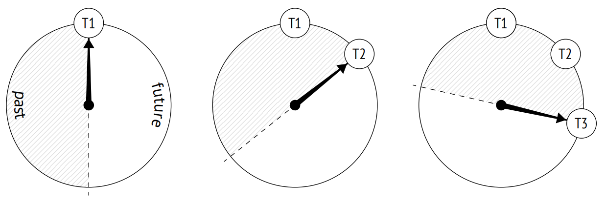
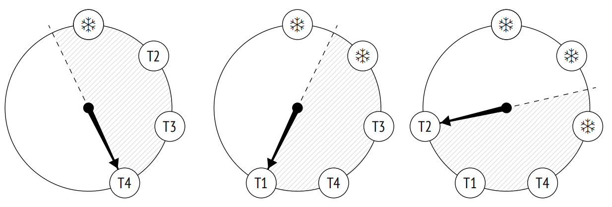
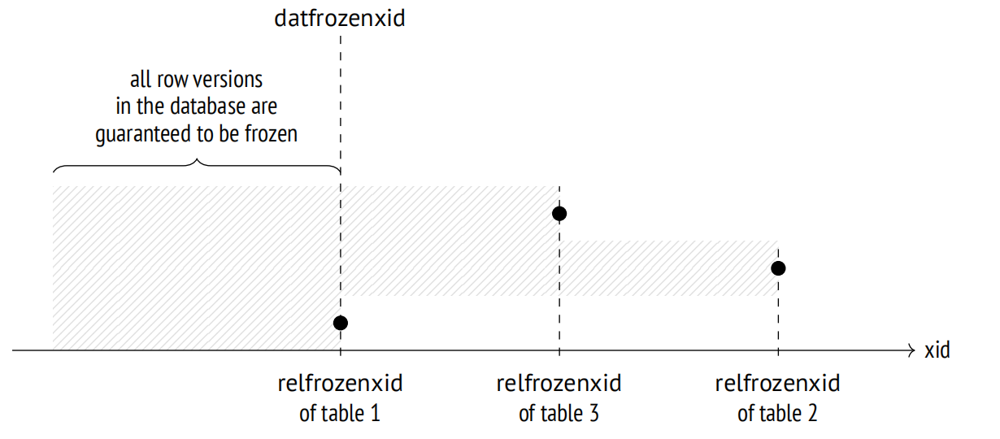

第 7 章：冻结
7.1 事务 ID 回卷
在 PostgreSQL 中，事务 ID 占用 32 位。四十亿似乎是一个相当大的数字，但如果系统使用频繁，那么可能很快便会耗尽。例如，对于平均每秒 1000 个事务的负载 (不包括虚拟事务)，在连续运行大约六周后就会发生这种情况。
一旦用完所有的数字，那么计数器必须重置以开始下一轮 (这种情况被称为"回卷")。但是，只有分配的数字在始终增加的情况下，才能认为具有较小 ID 的事务比具有较大 ID 的事务更老。因此，计数器在重置后不能简单地开始重新使用相同的数字。
为事务 ID 分配 64 位本可以彻底解决这个问题，那为什么 PostgreSQL 不使用呢？问题在于，每个元组头必须存储两个事务 ID：xmin 和 xmax。元组头目前已经相当大了 (如果考虑到数据对齐，至少 24 字节)，增加更多位将会再增加 8 字节。
PostgreSQL 确实实现了 64 位事务 ID 1，通过一个 32 位 epoch 扩展了常规 ID，但它们仅在内部使用，并且从不进入数据页。
为了正确处理回卷，PostgreSQL 必须比较事务的年龄 (年龄定义为自该事务开始以来，后续出现的事务数量) 而不是事务 ID。因此，我们应该使用更老 (先于) 和更年轻 (后于) 的概念，而不是小于和大于的术语。
在代码中，这种比较方式通过使用 32 位算术实现：首先找到 32 位事务 ID 之间的差值，然后将这个结果与零进行比较 2。
为了更好地可视化这个概念，你可以将一系列事务 ID 想象成一个时钟面。对于每个事务，顺时针方向的半圆是未来，而另一半是过去。

然而，这种可视化有一个令人头疼的问题。与最近的事务相比，旧事务 (T1) 处于遥远的过去。但迟早一个新的事务会在与未来有关的半圆中看到它。如果真是这样，那将产生灾难性的影响：从现在开始，所有更新的事务都将看不到事务 T1 所做的更改。
7.2 元组冻结和可见性规则
为了防止这种"时间旅行"，清理进程会执行一项额外的任务 (除了页面清理 3 )：它寻找超过数据库视界的元组 (所以这些元组在所有快照中都可见) 并以一种特殊的方式标记它们，也就是，冻结它们。
对于冻结的元组，由于这些元组已知在所有快照中都是可见的，因此可见性规则不必考虑 xmin，可以安全重用此事务 ID。
你可以想象为 xmin 事务 ID 在冻结的元组中被一个假想的"负无穷大" 所替代 (如下图所示的雪花)；这表明该元组由一个过去很久的事务所创建，它的实际 ID 已经不重要了。然而，实际上 xmin 保持不变，而冻结属性由两个提示位的组合所定义：committed 和 aborted。

许多来源 (包括文档) 都提到 FrozenTransactionId = 2。这就是我所提及的"负无穷大" — 在 9.4 之前的版本中，这个值用于替换 xmin，但现在改为使用提示位。这样一来，原来的事务 ID 保留在元组中，这对调试和支持都很方便。即使旧系统已升级到更高版本，它们仍然可能包含已废弃的 FrozenTransactionId。
xmax 事务 ID 不以任何方式参与冻结。它只存在于过期的元组中，一旦这些元组在所有快照中都不再可见 (这意味着 xmax ID 超出了数据库视界)，便会将其清理掉。
为了实验，让我们创建一个新表。将 fillfactor 参数设置为最低值，以便每个页面只能容纳两个元组 — 这样跟踪进度会更容易。我们还将禁用自动清理，以确保仅在需要的时候清理表。
=> CREATE TABLE tfreeze(
id integer,
s char(300)
)
WITH (fillfactor = 10, autovacuum_enabled = off);我们将创建另一个使用 pageinspect 显示堆页面的函数版本。在处理页面时，它将显示每个元组的冻结属性 (f) 和 xmin 事务年龄 (当然，它需要调用 age 系统函数 — 年龄本身并不存储在堆页面中)：
=> CREATE FUNCTION heap_page(
relname text, pageno_from integer, pageno_to integer
)
RETURNS TABLE(
ctid tid, state text,
xmin text, xmin_age integer, xmax text
) AS $$
SELECT (pageno,lp)::text::tid AS ctid,
CASE lp_flags
WHEN 0 THEN 'unused'
WHEN 1 THEN 'normal'
WHEN 2 THEN 'redirect to '||lp_off
WHEN 3 THEN 'dead'
END AS state,
t_xmin || CASE
WHEN (t_infomask & 256+512) = 256+512 THEN ' f'
WHEN (t_infomask & 256) > 0 THEN ' c'
WHEN (t_infomask & 512) > 0 THEN ' a'
ELSE ''
END AS xmin,
age(t_xmin) AS xmin_age,
t_xmax || CASE
WHEN (t_infomask & 1024) > 0 THEN ' c'
WHEN (t_infomask & 2048) > 0 THEN ' a'
ELSE ''
END AS xmax
FROM generate_series(pageno_from, pageno_to) p(pageno),
heap_page_items(get_raw_page(relname, pageno))
ORDER BY pageno, lp;
$$ LANGUAGE sql;现在让我们在表中插入一些行，并运行 VACUUM 命令，该命令将立即创建可见性映射。
=> CREATE EXTENSION IF NOT EXISTS pg_visibility;
=> INSERT INTO tfreeze(id, s)
SELECT id, 'FOO'||id FROM generate_series(1,100) id;
INSERT 0 100我们将使用 pg_visibility 扩展观察前两个堆页面。当清理完成后，这两个页面都会在可见性映射中被标记 (all_visible) ，但不在冻结映射 (all_frozen) 中，因为它们仍然包含一些未冻结的元组：
=> VACUUM tfreeze;
=> SELECT *
FROM generate_series(0,1) g(blkno),
pg_visibility_map('tfreeze',g.blkno)
ORDER BY g.blkno;
blkno | all_visible | all_frozen
−−−−−−−+−−−−−−−−−−−−−+−−−−−−−−−−−−
0 | t | f
1 | t | f
(2 rows)插入行的事务其 xmin_age 等于 1，因为它是系统中执行的最新事务：
=> SELECT * FROM heap_page('tfreeze',0,1);
ctid | state | xmin | xmin_age | xmax
−−−−−−−+−−−−−−−−+−−−−−−−+−−−−−−−−−−+−−−−−−
(0,1) | normal | 856 c | 1 | 0 a
(0,2) | normal | 856 c | 1 | 0 a
(1,1) | normal | 856 c | 1 | 0 a
(1,2) | normal | 856 c | 1 | 0 a
(4 rows)7.3 管理冻结
主要有四个参数用于控制冻结。它们都代表着事务年龄，并定义以下事件何时发生：
- 冻结开始 (vacuum_freeze_min_age)
- 执行急切冻结 (vacuum_freeze_table_age)
- 强制冻结 (autovacuum_freeze_max_age)
- 冻结优先 (vacuum_failsafe_age)
7.3.1 最小冻结年龄
vacuum_freeze_min_age 参数定义了 xmin 事务的最小冻结年龄。它的值越低，开销就越大：如果一行是"热的"并且被频繁更改，那么冻结其所有新创建的行版本将是一种浪费。将此参数设置为相对较高的值可以允许等待一段时间。
为了观察冻结过程，我们将这个参数值减为 1：
=> ALTER SYSTEM SET vacuum_freeze_min_age = 1;
=> SELECT pg_reload_conf();现在更新第零页中的一行。因为 fillfactor 值非常小，因此新的行版本将进入到同一页中：
=> UPDATE tfreeze SET s = 'BAR' WHERE id = 1;所有事务的年龄都增加了 1，堆页面现在如下所示：
=> SELECT * FROM heap_page('tfreeze',0,1);
ctid | state | xmin | xmin_age| xmax
−−−−−−−+−−−−−−−−+−−−−−−−+−−−−−−−−−−+−−−−−−
(0,1) | normal | 856 c | 2 | 857
(0,2) | normal | 856 c | 2 | 0 a
(0,3) | normal | 857 | 1 | 0 a
(1,1) | normal | 856 c | 2 | 0 a
(1,2) | normal | 856 c | 2 | 0 a
(5 rows)此时，那些比 vacuum_freeze_min_age = 1 更老的元组将被冻结。但是，vacuum 不会处理可见性映射中标记的任何页面：
=> SELECT * FROM generate_series(0,1) g(blkno),
pg_visibility_map('tfreeze',g.blkno)
ORDER BY g.blkno;
blkno | all_visible | all_frozen
−−−−−−−+−−−−−−−−−−−−−+−−−−−−−−−−−−
0 | f | f
1 | t | f
(2 rows)之前的 UPDATE 命令已经移除了第零页的可见性位，所以该页面中有合适的 xmin 年龄的元组都会被冻结。但是第一页将被彻底跳过：
=> VACUUM tfreeze;
=> SELECT * FROM heap_page('tfreeze',0,1);
ctid | state | xmin | xmin_age | xmax
−−−−−−−+−−−−−−−−−−−−−−−+−−−−−−−+−−−−−−−−−−+−−−−−−
(0,1) | redirect to 3 | | |
(0,2) | normal | 856 f | 2 | 0 a
(0,3) | normal | 857 c | 1 | 0 a
(1,1) | normal | 856 c | 2 | 0 a
(1,2) | normal | 856 c | 2 | 0 a
(5 rows)现在第零页再次出现在可见性映射中，如果第零页没有任何变化的话，那么 vacuum 将不会再返回到此页面：
=> SELECT * FROM generate_series(0,1) g(blkno),
pg_visibility_map('tfreeze',g.blkno)
ORDER BY g.blkno;
blkno | all_visible | all_frozen
−−−−−−−+−−−−−−−−−−−−−+−−−−−−−−−−−−
0 | t | f
1 | t | f
(2 rows)7.3.2 急切冻结年龄
正如我们刚刚已看到的，如果一个页面仅包含在所有快照中都可见的当前版本元组，那么 vacuum 将不会冻结它们。为了克服这个限制，PostgreSQL 提供了 vacuum_freeze_table_age 参数。该参数定义了允许 vacuum 忽略可见性映射的事务年龄，因此可以冻结任何堆页面。
对于每个表，系统表都保留了一个事务 ID，可以确定所有比该事务 ID 更老的事务都已被冻结。这个值为 relfrozenid：
=> SELECT relfrozenxid, age(relfrozenxid)
FROM pg_class
WHERE relname = 'tfreeze';
relfrozenxid | age
−−−−−−−−−−−−−−+−−−−−
854 | 4
(1 row)将此事务的年龄与 vacuum_freeze_table_age 的值进行比较，以决定是否到了进行急切冻结的时候。
得益于冻结映射，在清理期间便无需进行全表扫描：只需检查那些未出现在映射中的页面就足够了。除了这个重要的优化项之外，冻结映射还带来了容错能力：如果清理操作中断，下一次运行将不必回到已处理并且在映射中标记的页面。
每当系统中的事务数量达到了 vacuum_freeze_table_age − vacuum_freeze_min_age 限制时，PostgreSQL 就会对表中的所有页面进行急切冻结 (如果使用默认值，这将在每 100 百万个事务后发生) 。因此，如果 vacuum_freeze_min_age 值太大，可能会导致过度冻结并且增加开销。
要冻结整个表，让我们将 vacuum_freeze_table_age 值减小到 4，那么就满足了急切冻结的条件：
=> ALTER SYSTEM SET vacuum_freeze_table_age = 4;
=> SELECT pg_reload_conf();执行 VACUUM 命令：
=> VACUUM VERBOSE tfreeze;
INFO: aggressively vacuuming "public.tfreeze"
INFO: table "tfreeze": found 0 removable, 100 nonremovable row
versions in 50 out of 50 pages
DETAIL: 0 dead row versions cannot be removed yet, oldest xmin: 858
Skipped 0 pages due to buffer pins, 0 frozen pages.
CPU: user: 0.00 s, system: 0.00 s, elapsed: 0.00 s.
VACUUM现在整个表已被清理，可以推进 relfrozenid 的值 — 堆页内已确保没有更老的未冻结的 xmin 事务：
=> SELECT relfrozenxid, age(relfrozenxid)
FROM pg_class
WHERE relname = 'tfreeze';
relfrozenxid | age
−−−−−−−−−−−−−−+−−−−−
857 | 1
(1 row)第一页现在只包含已冻结的元组：
=> SELECT * FROM heap_page('tfreeze',0,1);
ctid | state | xmin | xmin_age | xmax
−−−−−−−+−−−−−−−−−−−−−−−+−−−−−−−+−−−−−−−−−−+−−−−−−
(0,1) | redirect to 3 | | |
(0,2) | normal | 856 f | 2 | 0 a
(0,3) | normal | 857 c | 1 | 0 a
(1,1) | normal | 856 f | 2 | 0 a
(1,2) | normal | 856 f | 2 | 0 a
(5 rows)另外冻结映射中也已标记此页面：
=> SELECT * FROM generate_series(0,1) g(blkno),
pg_visibility_map('tfreeze',g.blkno)
ORDER BY g.blkno;
blkno | all_visible | all_frozen
−−−−−−−+−−−−−−−−−−−−−+−−−−−−−−−−−−
0 | t | f
1 | t | t
(2 rows)7.3.3 强制自动清理年龄
有时，仅仅配置上面讨论的两个参数以及时冻结元组是不够的。自动清理进程可能会被关闭，而常规 VACUUM 根本没有被调用 (这是一个非常糟糕的主意，但从技术上来说是可能的)。另外，一些不活跃的数据库 (比如 template0) 可能不会被清理。PostgreSQL 可以通过以急切模式强制启用自动清理来处理这种情况。
当数据库中存在某些未冻结事务 ID 的年龄超过 autovacuum_freeze_max_age 值的风险时，将强制启动自动清理 4 (即使它已关闭)。这种行为基于所有表中最老的 pg_class.relfrozenxid 事务的年龄，因为所有更老的事务都确保已被冻结。此事务 ID 存储在系统表中：
=> SELECT datname, datfrozenxid, age(datfrozenxid) FROM pg_database;
datname | datfrozenxid | age
−−−−−−−−−−−+−−−−−−−−−−−−−−+−−−−−
postgres | 726 | 132
template1 | 726 | 132
template0 | 726 | 132
internals | 726 | 132
(4 rows)
autovacuum_freeze_max_age 被限制在 20 亿个事务 (略小于圆的一半)，默认值是这个值的十分之一。这样做是有充分理由的：较大的值会增加事务 ID 回卷的风险，因为 PostgreSQL 可能无法及时冻结所有需要的元组。在此情况下，服务器必须立即停止以防止可能的问题，并且必须由管理员重启。
autovacuum_freeze_max_age 的值也会影响到 CLOG 的大小。没有必要保留已冻结事务的状态，集簇中在 datfrozenxid 最老事务之前的所有事务都已经确保被冻结。那些不再需要的 CLOG 文件会被自动清理进程删除 5。
更改 autovacuum_freeze_max_age 参数需要重启服务器。但是，上面讨论的所有冻结设置也可以在表级别通过相应的存储参数进行调整。请注意，所有这些参数的名称都以"auto"开头：
-
autovacuum_freeze_min_age 和 toast.autovacuum_freeze_min_age
-
autovacuum_freeze_table_age 和 toast.autovacuum_freeze_table_age
-
autovacuum_freeze_max_age 和 toast.autovacuum_freeze_max_age
7.3.4 Failsafe 冻结年龄
如果自动清理进程已经在努力防止事务 ID 回卷，并且显然在与时间赛跑，那么就会"拉动"安全开关：自动清理进程将忽略 autovacuum_vacuum_cost_delay (vacuum_cost_delay) 值，并将停止清理索引以尽快冻结堆元组。
如果数据库中存在未冻结事务的年龄有超过 vacuum_failsafe_age 值的风险时，那么就会启用 failsafe 模式 6。假定此值必须高于 autovacuum_freeze_max_age。
7.4 手动冻结
有时，手动管理冻结比依靠自动清理会更加方便。
7.4.1 Vacuum 时进行冻结
你可以通过调用带有 FREEZE 选项的 VACUUM 命令以开启冻结操作。这将冻结所有堆元组，不管元组的事务年龄如何，就好像 vacuum_freeze_min_age 为 0 一样。
如果这样调用的目的是为了尽快冻结堆元组，那么禁用索引清理是有意义的，就像在 failsafe 模式下所做的那样。你可以通过运行 VACUUM (freeze, index_cleanup false) 命令或通过 vacuum_index_cleanup 存储参数来显式做到这一点。很明显，这不应该定期进行，因为在这种情况下，VACUUM 将无法很好地处理其主要任务 — 页面清理。
7.4.2 在初始加载时冻结数据
在加载数据至数据库时，预估不会更改的数据可以立即被冻结。这是通过带有 FREEZE 选项的 COPY 命令来完成的。
结果表只有在同一事务中被创建或截断时，元组才能在初始加载期间被冻结，因为这两种操作都会对表获取排它锁。此限制是必要的，因为无论隔离级别如何，冻结的元组都应在所有快照中可见；否则，事务会在加载数据时突然看到刚刚冻结的元组。但如果获取了锁，其他事务将无法访问该表。
尽管如此，从技术上来说，打破隔离性仍然是可能的。让我们在一个单独的会话中以可重复读隔离级别开启一个新事务：
=> BEGIN ISOLATION LEVEL REPEATABLE READ; => SELECT 1; -- the shapshot is built
在同一个事务中截断 tfreeze 表并将新行插入到该表中 (如果只读事务已经访问过 tfreeze 表，TRUNCATE 命令将被阻塞。)
=> BEGIN;
=> TRUNCATE tfreeze;
=> COPY tfreeze FROM stdin WITH FREEZE;
1 FOO
2 BAR
3 BAZ
\.
=> COMMIT;现在只读事务也看到了新数据：
=> SELECT count(*) FROM tfreeze; count −−−−−−− 3 (1 row) => COMMIT;
这确实打破了隔离性，但由于数据加载不太可能定期发生，因此在大多数情况下它不会引起任何问题。
如果加载数据时进行冻结，那么会立即创建可见性映射，并且页头会接收到可见性属性：
=> SELECT * FROM pg_visibility_map('tfreeze',0);
all_visible | all_frozen
−−−−−−−−−−−−−+−−−−−−−−−−−−
t | t
(1 row)
=> SELECT flags & 4 > 0 AS all_visible
FROM page_header(get_raw_page('tfreeze',0));
all_visible
−−−−−−−−−−−−−
t
(1 row)因此，如果数据已经在加载时冻结，那么表将不会被 VACUUM 处理 (只要数据保持不变)。不幸的是，TOAST 表尚不支持此功能：如果加载了过大的值，VACUUM 将不得不重写整个 TOAST 表，以设置所有页头中的可见性属性。
-
include/access/transam.h, FullTransactionId type ↩︎
-
backend/access/transam/transam.c, TransactionIdPrecedes function ↩︎
-
postgresql.org/docs/14/routine-vacuuming.html#VACUUM-FOR-WRAPAROUND ↩︎
-
backend/access/transam/varsup.c, SetTransactionIdLimit function ↩︎
-
backend/commands/vacuum.c, vac_truncate_clog function ↩︎
-
backend/access/heap/vacuumlazy.c, lazy_check_wraparound_failsafe function ↩︎